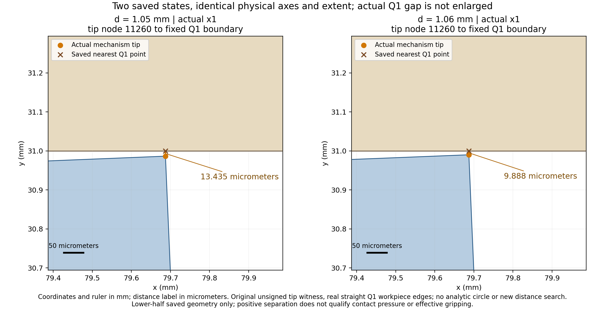
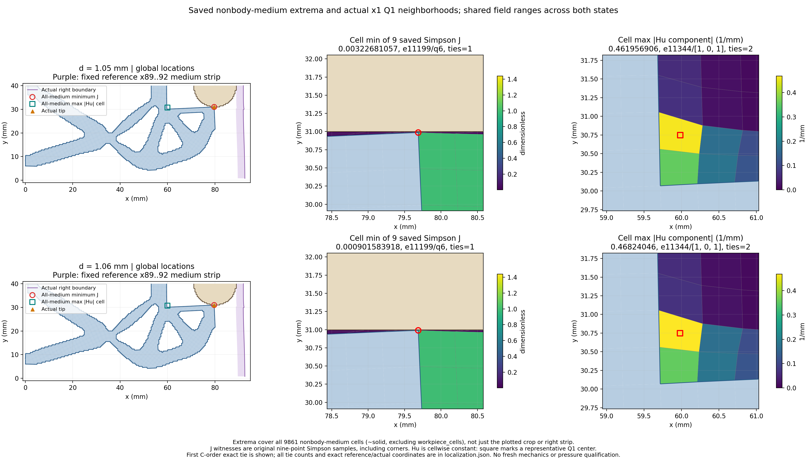

仅读 STEP10 的1.05/1.06 mm保存态。保持原物理、验收门和资格；没有新平衡路径、F/T/HP、压力或有效夹持结论。
| d (mm) | R input (N) | tip distance (micrometers) | medium min J | medium max |Hu| (1/mm) | body Fy total/material/Hu (N) |
|---|---|---|---|---|---|
| 1.05 | 0.191711978 | 13.434645 | 0.00322681057401 | 0.46195690592 | 0.0103449062403 / 0.00589587323608 / 0.00444903300426 |
| 1.06 | 0.195681833 | 9.887525 | 0.000901583917974 | 0.468240460499 | 0.0125925147328 / 0.00803341225879 / 0.00455910247399 |
两态采用相同物理坐标范围、等比例轴、实际×1，未人为放大间隙。工件采用真实Q1边，而非解析圆；微米标签来自既有unsigned tip witness，不新增距离搜索。

极值选择覆盖全部~solid并排除工件的介质。J为原九点Simpson值（含角点）；Hu逐单元常值，方框仅为代表中心。局部图是裁剪显示，极值不是局部范围内重新选取。精确并列保首个C-order见证及并列数量。

原值、身份、精确坐标与对账JSON | reaction | convergence
反力、工件弱力及收敛复用既有普通记录与图。下半域signed工件力不翻倍，包含Hu贡献；q_out是端口位移而非gap。局部显示不授压力、有效夹持、自由释放、稳定性、网格/域宽收敛或HF5资格。